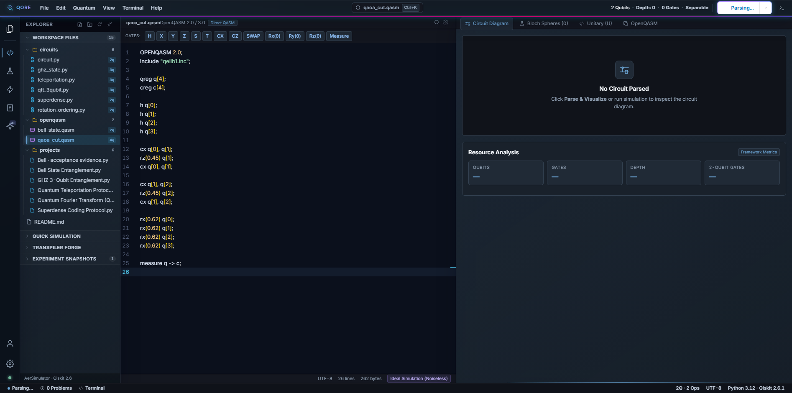
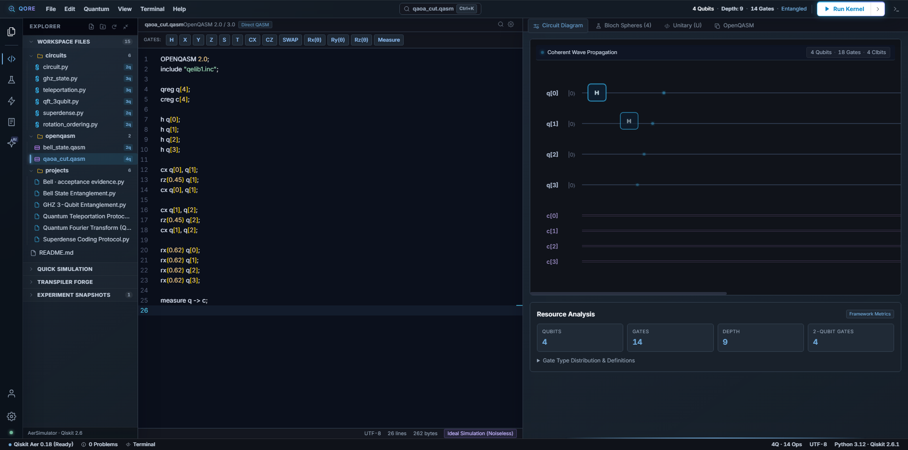
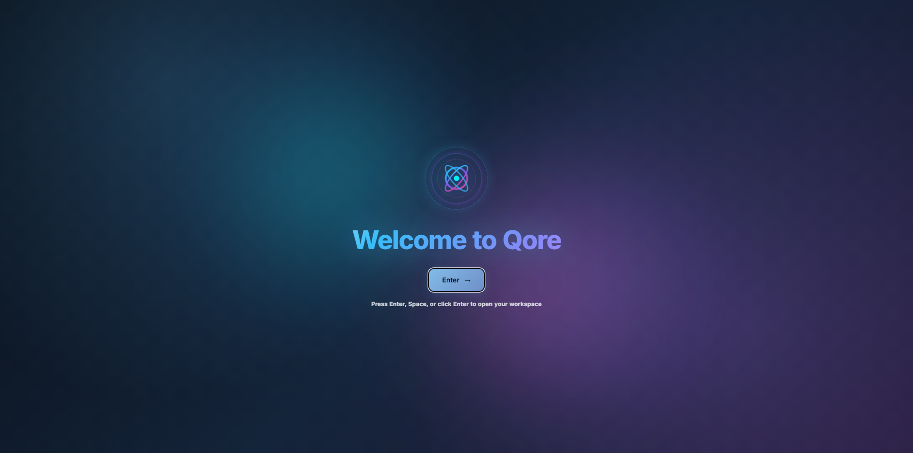
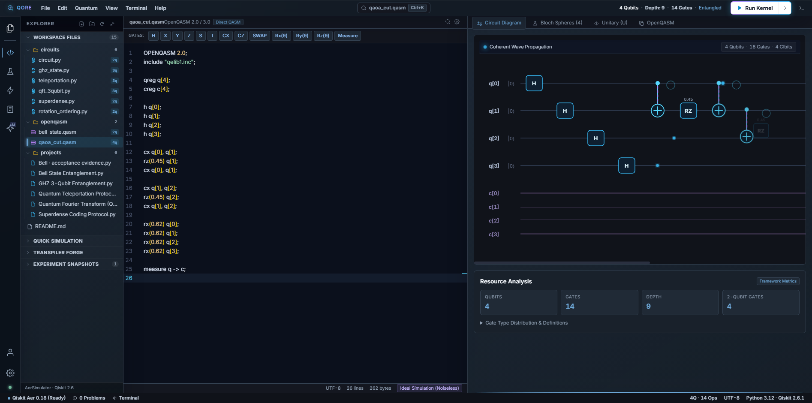
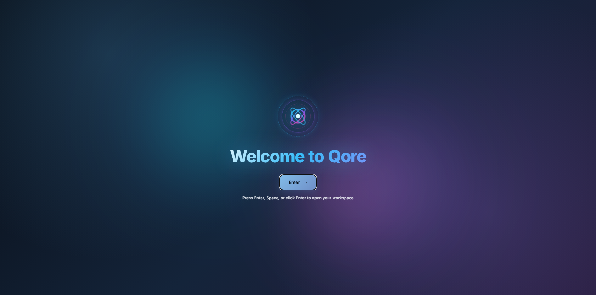

QORE // QAOA_CUT SIMULATION SHOWCASE
REAL APPLICATION RECORDING
Launch App Live: qore-bmh1.onrender.com
↗
DAVINCI MOTION // 4K 60FPS RECORDING
✦
openqasm/qaoa_cut.qasm Loaded

CIRCUIT INSPECT: openqasm/qaoa_cut.qasm
SOURCE VERIFIED
4-Qubit QAOA Max-Cut Variational Circuit · 15 Gates
• Register:
qreg q[4]; creg c[4];
• Initial Superposition:
h q[0..3];
• Problem Hamiltonian:
cx, rz(0.45), cx (ZZ Interactions)
• Mixer Hamiltonian:
rx(0.62) q[0..3];
REAL CAPTURE // QORE STUDIO IDE (MONACO AST PARSER)
TARGET: openqasm/qaoa_cut.qasm

UNITARY OPERATOR MATRIX (16×16 COMPLEX)
dim = 2⁴ = 16
Exact Operator Calculus Before Hardware Execution
• Total Matrix Dimension:
16 × 16 (256 Complex Coefficients)
• Hover Cell Inspection:
|U₀,₀| = 0.340 + 0.125i
• Modulus:
0.362
· Phase:
0.352 rad (e^0.352i)
• Operator Trace Norm:
Tr(U†U) = 16.0000000 (Unitary Validated)
REAL CAPTURE // UNITARY HEATMAP VIEWER
COMPLEX MULTI-QUBIT OPERATOR

AERSIMULATOR SIMULATION RESULTS (1024 SHOTS)
1.42 ms EXECUTION
Dominant State Convergence to Optimal Cut Partitions
• Dominant State A:
|0111⟩ → 142 counts (13.8%)
• Dominant State B:
|1000⟩ → 125 counts (12.2%)
• Combined Cut Mass:
26.0% (Peak Energy Minimum)
• TVD Metric:
0.038
· Hardware Simulation Seed:
42
REAL CAPTURE // QORE LAB (AERSIMULATOR)
OPTIMAL GRAPH CUT RECOVERED

4-QUBIT 3D BLOCH REGISTRY (Q0, Q1, Q2, Q3)
MULTI-QUBIT 3D
Synchronized Euler Angles & State Precession
• Q0 (Source Node):
θ = 0.92 rad, φ = 1.15 rad
• Q1 (Interim Node):
θ = 1.45 rad, φ = 2.08 rad
• Q2 (Partition B):
θ = 2.10 rad, φ = 0.62 rad
• Q3 (Target Leaf):
θ = 0.68 rad, φ = 3.14 rad
• State Purity:
P = Tr(ρ²) = 1.000
REAL CAPTURE // 3D BLOCH SPHERE PROJECTION ENGINE
4-QUBIT COHERENT EVOLUTION

FORGE TRANSPILER: 20% GATE REDUCTION & EQUIVALENCE
PROVEN EQUIVALENCE
Commutative Cancellation & SABRE Qubit Mapping
• Original Circuit:
15 Gates · Depth 7
• Optimized Candidate:
12 Gates · Depth 5 (-20% Overhead)
• Trace Equivalence Proof:
|Tr(U₁†U₂)| / 16 = 1.0000000
• Global Phase Drift:
< 10⁻⁷ Numerical Tolerance
REAL CAPTURE // QORE FORGE (FORMAL EQUIVALENCE ENGINE)
LIVE: https://qore-bmh1.onrender.com/
Telemetry:
"Click Play Showcase or Switch to MP4 Video to inspect the real openqasm/qaoa_cut.qasm simulation results."
00:00
02:25
01. QAOA Cut Code
02. 16×16 Unitary Matrix
03. Aer 1024 Shots Lab
04. 3D Bloch Spheres
05. Forge Equivalence Proof
▶
Play Showcase
↺ Restart
🎙️
Narrator: ON
🎵
Synth Audio: ON
🎬
Switch to MP4 Video
💾
Download MP4
1.0x Speed
1.25x Speed
1.5x Speed
⛶ Fullscreen